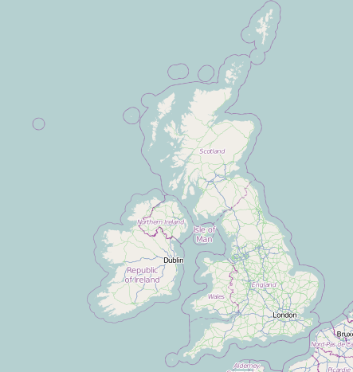

Kitten Appreciation Bill
Summary:
The Bill would make the kitten the official symbolic animal of the United Kingdom. Every day, UK citizens would have to observe five minutes of silent kitten contemplation.
Currently at its report stage in the Commons. There has been a debate on all aspects of the bill
Public Oppinion

Click to see your local MP's view.
